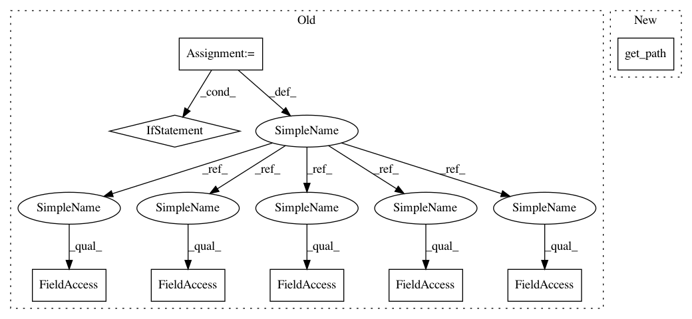

5535b861bc9ca33dc06f92a143694040d837f3de,wandb/sdk/wandb_artifacts.py,WBArtifactHandler,load_path,#WBArtifactHandler#Any#Any#Any#,1188
Before Change
artifact = PublicApi().artifact_from_id(util.hex_to_b64_id(artifact_id))
artifact_path = artifact.download()
link_target_path = os.path.join(artifact_path, artifact_file_path)
link_creation_path = os.path.join(
self._cache._cache_dir, "tmp", link_target_path
)
filesystem._safe_makedirs(os.path.dirname(link_creation_path))
if os.path.islink(link_creation_path):
os.unlink(link_creation_path)
os.symlink(os.path.abspath(link_target_path), link_creation_path)
return link_creation_path
After Change
dep_artifact = PublicArtifact.from_id(
util.hex_to_b64_id(artifact_id), self.client
)
link_target_path = dep_artifact.get_path(artifact_file_path).download()
return link_target_path
In pattern: SUPERPATTERN
Frequency: 4
Non-data size: 8
Instances
Project Name: wandb/client
Commit Name: 5535b861bc9ca33dc06f92a143694040d837f3de
Time: 2020-11-16
Author: tim.s.sweeney@gmail.com
File Name: wandb/sdk/wandb_artifacts.py
Class Name: WBArtifactHandler
Method Name: load_path
Project Name: wandb/client
Commit Name: 5535b861bc9ca33dc06f92a143694040d837f3de
Time: 2020-11-16
Author: tim.s.sweeney@gmail.com
File Name: wandb/sdk_py27/wandb_artifacts.py
Class Name: WBArtifactHandler
Method Name: load_path
Project Name: biolab/orange3
Commit Name: 8fe3f75bd7dc4022c3cd4fcf4c6f7a1832ec6364
Time: 2020-03-26
Author: ales.erjavec@fri.uni-lj.si
File Name: Orange/misc/environ.py
Class Name:
Method Name: cache_dir
Project Name: biolab/orange3
Commit Name: 8fe3f75bd7dc4022c3cd4fcf4c6f7a1832ec6364
Time: 2020-03-26
Author: ales.erjavec@fri.uni-lj.si
File Name: Orange/misc/environ.py
Class Name:
Method Name: data_dir_base